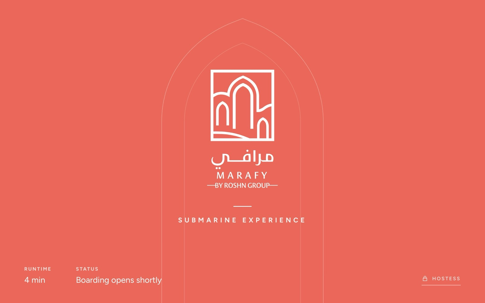

MARAFY · Submarine Experience
Tablet UI prototype
The guest and hostess tablets, following the MARAFY brand guidelines. Best viewed on a tablet or desktop.
Open the prototype
How to try it
- 01Use the bar at the bottom of the prototype to jump between steps.
- 02Idle and Idle · photo are the two welcome screens to compare.
- 03For the live controls, choose Now playing, press and hold the lock mark in the tablet’s bottom corner, then enter 2026.